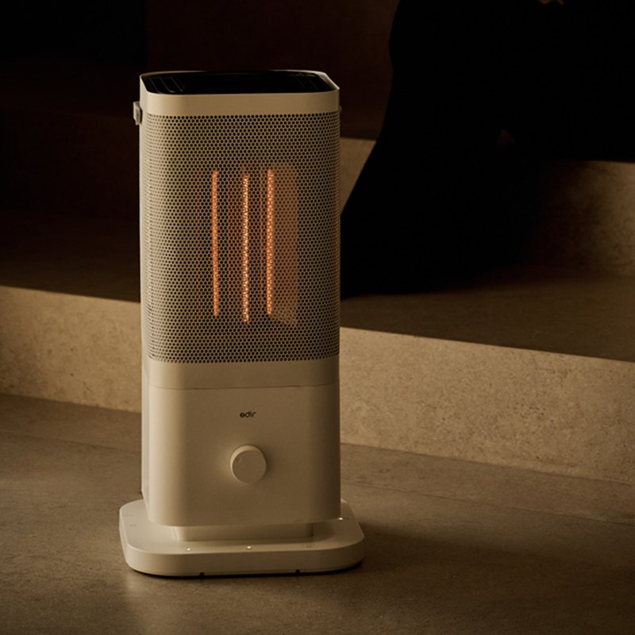
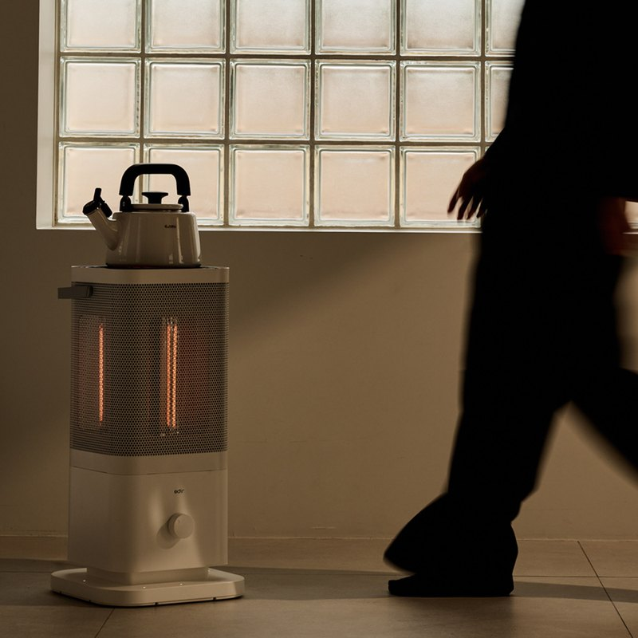
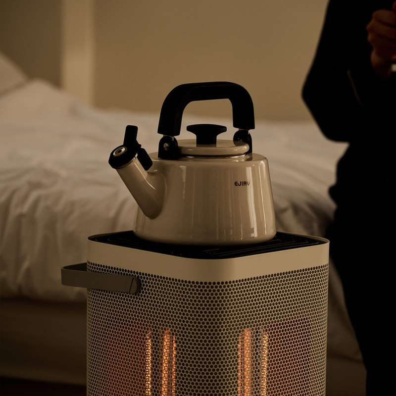
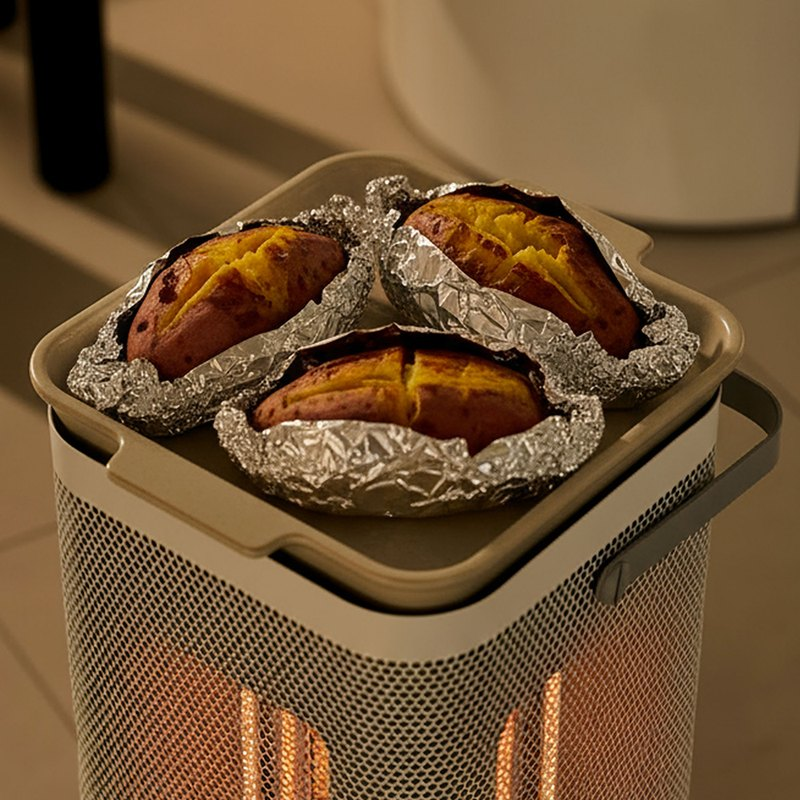

Edir Carbon Five-Sided Heater Review: Overview
This Edir carbon five-sided heater review looks at the Edir Obang-nanro (에디르 오방난로), a cream-coloured Korean carbon space heater that warms a room in five directions. In Korean apartments, many families avoid running the ondol floor boiler all day just to keep one study or bedroom warm, so a compact electric heater for a single room is a very common winter buy.
The pitch is simple: carbon lamps that glow and warm up within seconds, five faces you can switch on separately, and a retro lantern-like design that looks fine in a living room. We checked the official Korean product notice, Korean price-comparison specs and Korean owner reviews to see what it really offers.
"Five carbon heating faces at 400 W each — use one at your desk, or all five (2,000 W) when the family gathers."

Design: A Lantern-Style Heater with Five Warm Faces
It is a 300 × 300 × 615 mm square tower with a perforated cream metal mesh, a white base with a single dial, and a carry handle on top. Inside, the carbon lamps sit in front of stainless reflectors. That is the origin of the name: obang (오방) means the five directions, and nanro (난로) means a stove.
Edir's own lifestyle photos show a kettle and foil-wrapped sweet potatoes resting on the warm top — a nod to the old Korean habit of roasting goguma on a winter stove. Treat that as styling, not a cooking feature: follow the manual for anything you put on the top surface.


Carbon Heating and How the Five Faces Work
Carbon heaters are radiant heaters: they warm people and objects in front of them rather than blowing hot air. Korean owners say the glow and warmth start almost immediately after switch-on, which is the main reason people pick carbon over oil-filled radiators that take a while to heat up.
- One face (400 W): enough for a person at a desk or reading chair.
- Two or three faces: a small bedroom or study.
- All five faces (2,000 W): people sitting around it in a living room, up to the listed 33 m².
- No fan: radiant heat makes no fan noise, so it suits bedrooms and quiet offices.


Key Specs
| Spec | Korean listing |
|---|---|
| Brand / product | Edir (에디르) five-sided carbon heater, "Obang-nanro" |
| Release | September 2025 (current model, per Korean product notice) |
| Heating | Carbon lamps with stainless reflectors, 5 faces (front, back, left, right, top) |
| Power | 220 V, 60 Hz; 400 W per face, 2,000 W with all 5 faces |
| Heating area | 33 m² (about 10 pyeong) |
| Size | 300 × 300 × 615 mm |
| Weight | About 4.5 kg (Korean owner review) |
| Certification | KC electrical safety SU072146-25001 |
| Made in | China (Edir, Korea) |
| Korean price | About 148,000–158,000 KRW at the time of writing |
| After-sales (Korea) | 031-944-1114 |
| U.S. Amazon | Korean 220 V model not confirmed — we link a similar-heater search |
Specs are as published on the Korean product notice and Korean retail and price-comparison listings, and were not lab-measured by us.
What It Costs to Run in Korea
Korean households pay a tiered electricity tariff, so how many faces you use matters. One face for 5 hours a day is about 60 kWh a month — a modest addition for most homes. All five faces for 5 hours a day is about 300 kWh a month, which can push a household into a higher tariff tier. The smart way to use it is the way Korean reviewers recommend: one or two faces aimed at where you sit, and all five only for short periods.
How It Compares
| Edir five-sided carbon heater | Oil-filled radiator | Ceramic fan heater | |
|---|---|---|---|
| Heat type | Radiant (carbon lamps) | Convection (slow, even) | Forced hot air |
| Warm-up | Seconds | Slow | Fast |
| Noise | Silent | Silent | Fan noise |
| Directions | Up to 5 faces, switched separately | All around | One direction |
| Best for | Spot heating people in a room | Keeping a closed room warm for hours | Quick blasts in small spaces |
Pros & Cons
| Pros | Cons |
|---|---|
| Five faces you can switch on one at a time | 2,000 W at full power — a big load on Korean tiered tariffs |
| Carbon lamps warm up in seconds, no fan noise | Radiant heat: the area right behind you stays cooler |
| Attractive lantern-style design with a carry handle | Mesh surface gets hot — supervise near kids and pets |
| KC-certified, Korean after-sales number | Korean 220 V plug — not for U.S. outlets |
Who It Suits (and Who Should Skip It)
- Yes: People in Korea who want to heat one room or desk instead of the whole apartment.
- Yes: Small offices and studios where fan noise is annoying.
- Yes: Families who sit together in the living room on winter evenings.
- No: Anyone who needs whole-home heat — that is what ondol is for.
- No: U.S. buyers — choose a 120 V model instead.
Edir Five-Sided Heater FAQ
What is the Edir five-sided carbon heater (Obang heater)?
It is a Korean electric space heater sold by Edir (에디르) as the 'Obang-nanro' (오방난로), which means a 'five-direction stove'. Carbon heating lamps sit behind the front, back, left and right faces and the top, so warmth spreads in five directions instead of one. Korean retail listings give a release date of September 2025 for the current model.
How much power does it use?
The Korean product notice lists 220 V / 60 Hz and 400 W per heating face, or 2,000 W with all five faces on. Running one face at 400 W for an hour uses 0.4 kWh; running all five uses about 2 kWh per hour, so Korean reviewers recommend a wall socket rather than a cheap power strip at full power.
How big a room does it heat?
The official listing gives a heating area of 33 m² (about 10 pyeong, roughly 355 sq ft) with all faces on. In practice most Korean buyers use one or two faces for a desk, study or bedroom and switch on all five only when a family is sitting around it.
Can I use it outside Korea?
It is a 220 V / 60 Hz appliance with a Korean plug and KC certification (SU072146-25001). It is not made for 120 V U.S. homes, and a 2,000 W heater should never run through a small travel converter. Our shop button opens a search for similar U.S.-voltage multi-sided carbon or infrared heaters instead.
Is it safe around children and pets?
It has a protective metal mesh, but the surface still gets hot, as with any radiant heater. Korean spec listings for Edir's five-sided heater mention a tip-over cut-off sensor and a timer; confirm these on your unit's manual. Keep a clear distance from curtains, bedding and paper, never leave it on unattended, and consider a safety gate with toddlers.
Multi-Sided Carbon & Infrared Space Heaters
The Korean 220 V Edir heater is not confirmed on U.S. Amazon, so here is a search for similar U.S.-voltage multi-sided carbon and infrared heaters.